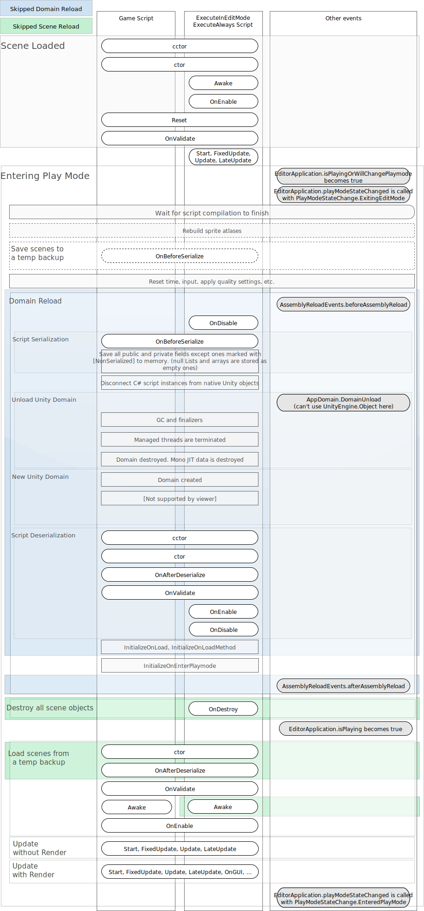

What Unity skips when Domain Reload and Scene Reload is disabled
From a high-level perspective, entering Play Mode consists of the following main stages:
Backup current ScenesA Scene contains the environments and menus of your game. Think of each unique Scene file as a unique level. In each Scene, you place your environments, obstacles, and decorations, essentially designing and building your game in pieces. More info See in Glossary. This only happens when the Scene has been modified. Allows Unity to revert the Scenes when Play Mode is exited to the state they were in before Play Mode started.
Domain Reload. Resets the scripting state, by reloading the scripting domain.
Scene Reload. Resets the Scene state, by reloading the Scene.
Update Scene. This happens twice; once without renderingThe process of drawing graphics to the screen (or to a render texture). By default, the main camera in Unity renders its view to the screen. More info See in Glossary, and once with rendering.
The combined tasks of Domain Reload and Scene Reload resets the scripting domain and simulates the startup behavior of your application as it would run in the player. Unity skips these steps when you disable them in your Project SettingsA broad collection of settings which allow you to configure how Physics, Audio, Networking, Graphics, Input and many other areas of your project behave. More info See in Glossary.
The diagram below provides detailed information about the exact events which Unity skips when Domain Reload and Scene Reload are disabled. Yellow indicates the events Unity skips when Domain Reload is disabled, and pink indicates the events Unity skips when Scene Reload is disabled.

What Unity performs when Scene Reloading and Domain Reloading are both enabled
With Scene Reloading and Domain Reloading enabled, this is the full list of all processes and events that Unity performs when entering Play Mode:
The C# domain is stopped:
a. OnDisable() is called for all ScriptableObjects and MonoBehaviours.
b. Unity waits for all async operations to finish.
The state of all MonoBehaviours and ScriptableObjects is serialized.
a. OnBeforeSerialize() is called.
b. All public and private field values are serialized, except those marked with [NonSerialized].
Managed wrappers are disconnected from native Unity objects.
The Unity Child Domain is reloaded:
a. Mono domain unload:
i. The AppDomain.DomainUnload event is raised.
ii. The Unity Child Domain is destroyed
1. GC and finalizers are called.
2. Threads are terminated.
3. All JIT info is deleted.
b. The new Unity Child Domain is created.
The assemblies are loaded:
a. System assemblies are loaded.
b. Unity assemblies are loaded.
c. User assemblies are loaded.
The synchronization context is initialized.
The scripting state is restored.
a. The scriptable part of all Unity objects is recreated.
i. Constructors are called, and statics are assigned their default values.
b. The state of all Unity objects is deserialized:
i. The serialized stated of all Unity objects are restored.
1. The OnAfterDeserialize event is raised.
ii. OnValidate() is called.
iii. For scriptsA piece of code that allows you to create your own Components, trigger game events, modify Component properties over time and respond to user input in any way you like. More info See in Glossary using the [ExecuteInEditMode] attribute:
1. OnEnable() is called.
2. OnDisable() is called.
3. OnDestroy() is called.